1. fx-ct-scene-cut at 0.9 s
RGBA MAE8/p99: R 94.7579/156 / G 96.1163/157 / B 95.7004/157 / A 0.0000/0

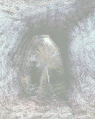
Mobile / desktop / difference x16. Fixed per-channel limits: MAE8 ≤ 2, p99 ≤ 8. Ranked by largest channel MAE at each spec's worst time. Failures remain bugs.
RGBA MAE8/p99: R 94.7579/156 / G 96.1163/157 / B 95.7004/157 / A 0.0000/0

RGBA MAE8/p99: R 47.0367/206 / G 50.1078/223 / B 64.8907/247 / A 0.0000/0


RGBA MAE8/p99: R 35.7798/132 / G 41.2522/134 / B 45.3923/148 / A 0.0000/0

RGBA MAE8/p99: R 29.4437/123 / G 35.3152/154 / B 18.3097/140 / A 0.0000/0
RGBA MAE8/p99: R 32.9063/156 / G 33.0324/170 / B 33.5164/189 / A 0.0000/0

RGBA MAE8/p99: R 22.2405/164 / G 22.3227/166 / B 23.0807/164 / A 0.0000/0
RGBA MAE8/p99: R 21.8636/115 / G 17.8968/113 / B 21.9840/140 / A 0.0000/0
RGBA MAE8/p99: R 21.1222/222 / G 7.4952/73 / B 14.5628/164 / A 0.0000/0
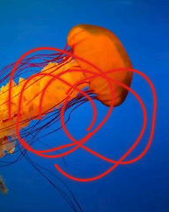
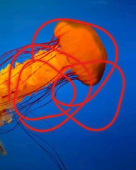
RGBA MAE8/p99: R 19.0955/58 / G 19.1716/56 / B 19.0955/58 / A 0.0000/0
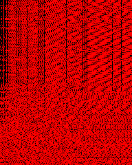
RGBA MAE8/p99: R 17.4013/148 / G 18.3130/150 / B 18.3921/156 / A 0.0000/0
RGBA MAE8/p99: R 6.5879/17 / G 18.3376/29 / B 14.4780/25 / A 0.0000/0


RGBA MAE8/p99: R 15.2225/74 / G 14.4247/65 / B 13.6410/66 / A 0.0000/0
RGBA MAE8/p99: R 14.6357/148 / G 14.5999/150 / B 14.6295/148 / A 0.0000/0
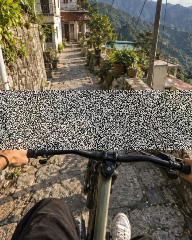
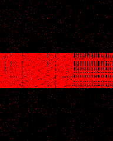
RGBA MAE8/p99: R 11.7416/148 / G 12.4139/154 / B 13.1195/156 / A 0.0000/0

RGBA MAE8/p99: R 13.1139/124 / G 12.8905/126 / B 11.8396/124 / A 0.0000/0

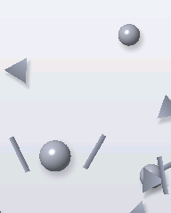
RGBA MAE8/p99: R 11.7742/42 / G 10.9904/41 / B 9.8083/33 / A 0.0000/0
RGBA MAE8/p99: R 11.4820/41 / G 10.9313/40 / B 10.2833/33 / A 0.0000/0

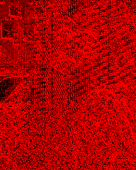
RGBA MAE8/p99: R 11.2954/33 / G 11.3778/32 / B 11.3752/33 / A 0.0000/0
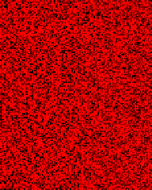
RGBA MAE8/p99: R 10.7110/58 / G 10.1448/61 / B 9.7414/74 / A 0.0000/0
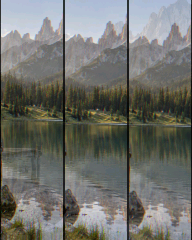
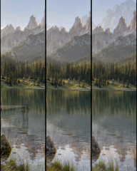
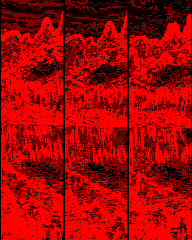
RGBA MAE8/p99: R 9.6947/33 / G 9.7965/32 / B 9.8423/33 / A 0.0000/0